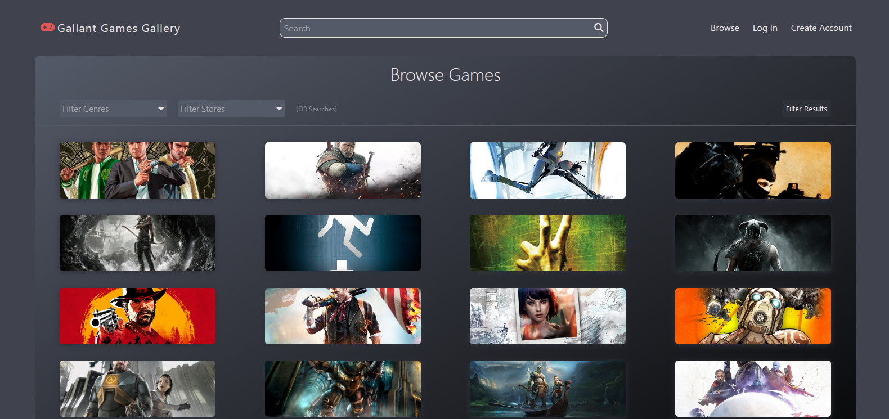
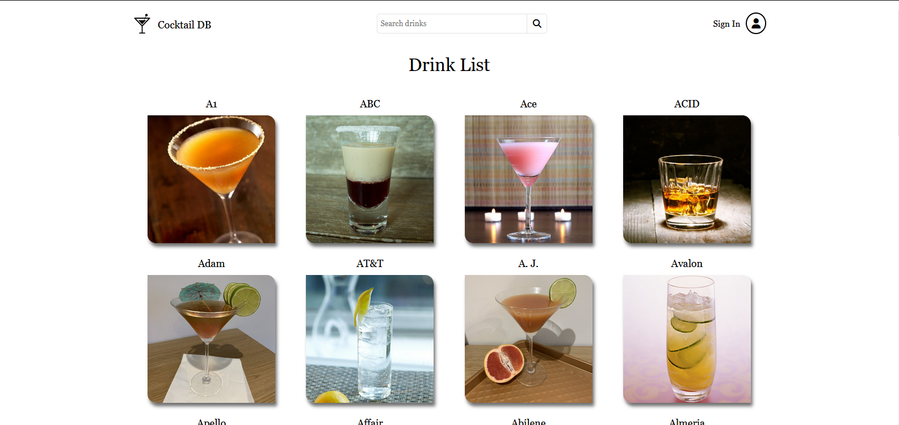
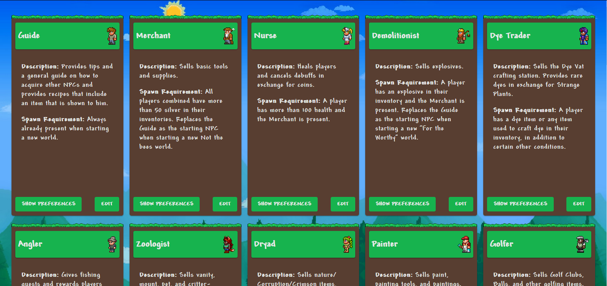

Check out my projects!
Video Game API Website
A single page application that allows you to search through a list of games and, with an account, add games to lists, review games, and see other users' profiles. All is responsive down to a phone screen.


Library Management System
A library management website built to allow users to borrow and return different books. Admin features are built in to allow for CRUD features for loans and books. Signup and login are handled by Laravel Breeze. Built using Laravel and styling with Tailwind.


Cocktail API Website
A single page website that allows users to sign up and to view various cocktails from an API. Users can add drinks to their favorites and view them in a user page along with statistics about all of them.
React Terraria NPC Data Display
A React application that displays a list of characters from Terraria. Each character has their own likes and dislikes that can be viewed and navigated in a modal. A few components were used to display information from a data store and to allow the user to edit basic descriptions.
Development Knowledge

About me
My name is Matthew Wolf. I graduated Indiana University Indianapolis with a Bachelor's in Informatics and a certificate in multi-device web development. I have experience working in JavaScript, React, PHP, and HTML/CSS. I can leverage this experience to create full-stack websites and web applications.
My education has given me valuable experience in application development including the creation of applications using design patterns like CRUD and MVC, creating APIs with PHP, accessing and using APIs with JavaScript, and utilizing MYSQL and NoSQL databases.
My interests include playing guitar, video games, and reading!